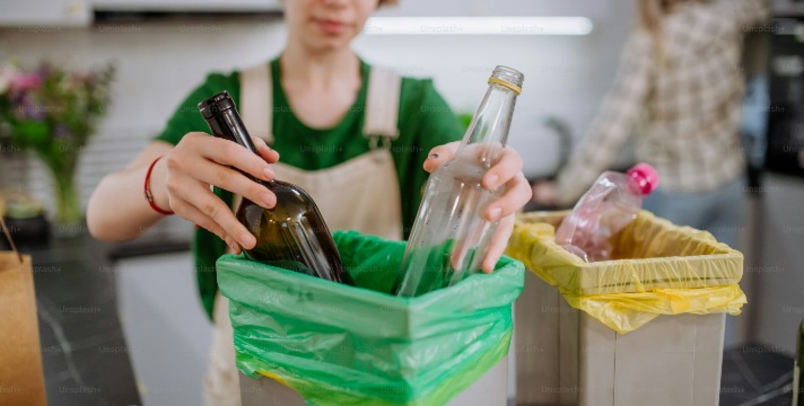
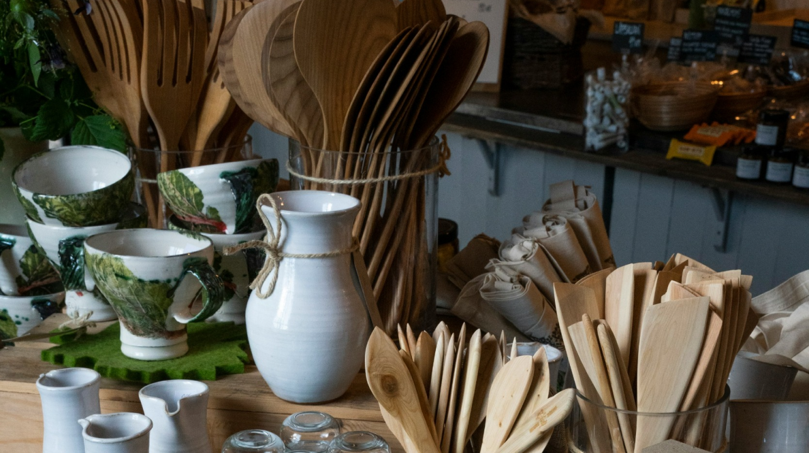
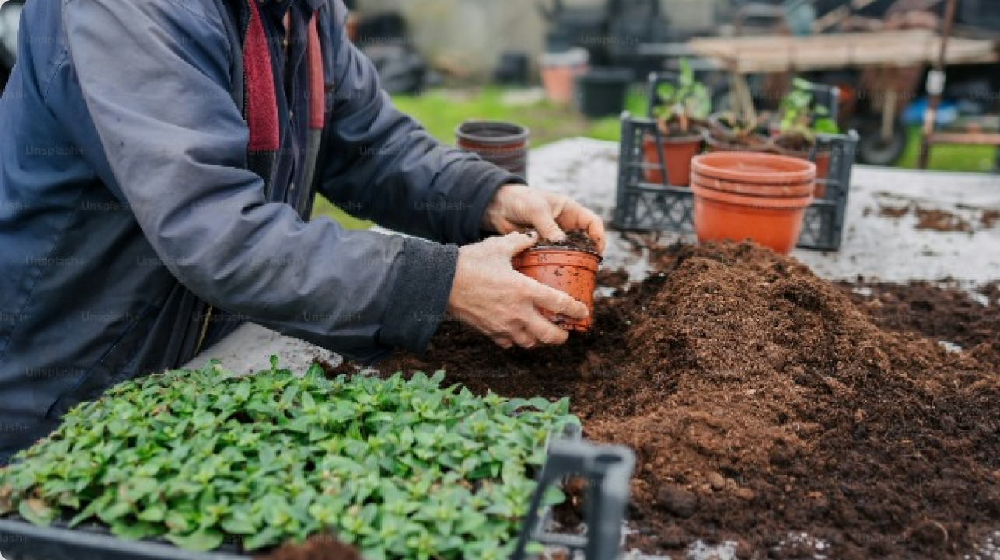

Edukasi
Kevin Tri Putra
Artikel

Yuk, Belajar Mengelola sampah Sejak Dini Secara Mandiri
I-Trashy • 02 Januari 2024

Cara membuat kerajinan daur ulang dari barang bekas
Kompas.com • 02 Januari 2024

Pupuk kompos untuk tanaman kesayangan anda
Detik.com • 02 Januari 2024
Video
Berapa lama sampah plastik dapat terurai? Yuk, cari tau
I-Trashy • 02 Januari 2024
Gerakan bersih - bersih pantai di Indonesia
I-Trashy • 02 Januari 2024
Tips Memilah Sampah Tanpa Ribet Di Rumah
I-Trashy • 02 Januari 2024